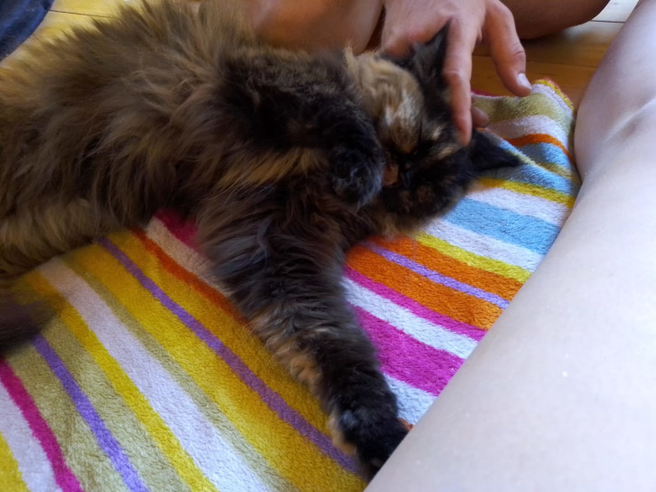

Yesterday was Mike’s birthday. Can you believe it, he is actually old now. Since I am seven months younger I take great joy in reminding him of that fact. Every year. See why our relationship works so well?
The day started out only semi-good. The spot we had chosen to camp at the previous night (near Neumarkt i.d. Opf) turned out to be right by a large traffic road and a building site, which meant we were woken loudly when the rest of the world decided they wanted to do nothing more than get to work. So very German, honestly.
We tried to turn the day around by finding the nicest lake nearby, setting up camp and (after fulfilling the joyful task of manually cleaning out the waste-water tank and the pipes for what must have been the first time in years) going for a swim. We got in some much needed fun, before the weather turned. A storm with thunder, lightning and some heavy rain started only an hour or so after we went into the water. It made me very glad we chose to get a campervan instead of going tramping for a year. I think we would have been quite miserable then.
Sadly, the rain meant we couldn’t go to the stalactite caves nearby, but that just means it is an adventure for another day. We did however bundle up in the cosy campervan and use the reprieve from the heat to air out Atlas properly. After that we went for a very nice dinner in the local italian restaurant.
The day could have ended there and been ever so nice, but things never are that easy, are they? Just as we had turned in for the night and were about to settle in to a nice film (Asterix and Obelix) chaos ensued.
Mike, after having a shower and washing his hands, discovered that the carpet in our miniature hallway was wet. And not just a little damp, I mean actually soaking wet. After only a few minutes we realized that something was very wrong with the pipes, as they were only doing their job half-heartedly at best. For some reason a portion of the water was going next to the pipes and that meant it went under the bathroom and into the hall.
After ages of trying to work out what the problem was Mike discovered two things:
First, most likely something broke when he cleaned the pipes.
Second, the wonderful construct of our 20 year old van meant that we could not simply take off the wall in front of the pipes to see what was going on.
Which meant we had to get professional help. We both knew there was nothing we could do about it at 10 pm and frustration levels were high, so we gave up for the night and watched Asterix and Obelix anyway.
This morning our wake-up was a lot nicer. Our good friend Bea decided that she would personally improve our situation, so she brought us fresh rolls, juice and apple cake for breakfast. It’s amazing how the prospect of cake can make any negative feelings go away.
It certainly was a blessing for us, since the rest of the day was so exhausting. Mike tried calling around to see if there was a garage nearby that would have a look at Atlas. Mostly…no. The general suggestion was that we are in the middle of campervan season, so we should have planned our unscheduled learning opportunity better. Next time we will make sure all our damages occur between November and March.
It took a while, but eventually we found a garage that agreed to let us come by and maybe do some damage assessment, if they had time. We were again reminded that it is campervan season, so we should expect some waiting time.
Since we really like using water in our car, we went by. The lady at the desk told us we should go out and wait in the car, someone would come out when they had time to look at the campervan. So we did as we were told and waited. And waited some more. And then we slept a bit, before we did some more waiting. After four hours we decided to go in and double check they hadn’t forgotten us. The lady at the desk (a different lady this time and apparently the woman who had been on the phone), was shocked that we hadn’t come in earlier, because of course someone had time to look at Atlas. We were so excited to have someone take the time to help us that we didn’t bother correcting her.
The car mechanic who came to look at the damage was nice. Sadly, he is no miracle worker. He took one look at the bottom of the sink and I swear he recoiled a bit. He explained to us that he could fix the pipe. His guess was that two of the bottom pipes had just loosened a bit and all that would have to be done was for them to be stuck back together again. No bother.
But.
The pipes in question are underneath the bathroom, probably right underneath the cupboard. There is a cover that can be taken out, but the pipes are not where the cover is. To get at the pipes properly he would have to take out the whole bathroom. And according to him he could not guarantee that every part would make it out intact. And if any part of the bathroom broke, he would not be able to replace it, because those parts have not been made in the past decade or so. Also, it would take him two or three days, would be very, very expensive and there is no chance of that happening before mid-November. Campervan season, you know.
The decision was made there and then that we would do it ourselves. According to the mechanic, if we cut a hole in the bottom of the cupboard we should be able to get down to the offending pipes to fix the problem and we could then put in some other bottom. Or just not use the cupboard (we do a have an over abundance in space since Atlas is bigger on the inside).
After the conversation we tried to weigh our options, but really there wasn’t much to do. There was a possibility for us to fix it and one good option to do it. So we turned around and headed back to Regensburg.
It was good timing, too. Just as we arrived back, the firebrigade was leaving. Apparently there had been too much rain and the cellar had got flooded. Cleaning it was a lot easier with four people than it would have been with two, I imagine.
Mike has spent some time with the pipes, but it’s still work in progress. We have no idea how long we will need and when we can be on the road again. But with any luck it will be soon and we will finally be able to start our trip properly.
Until then, we will do the two most important things: Keep calm and cuddle the cat.
Lilo
